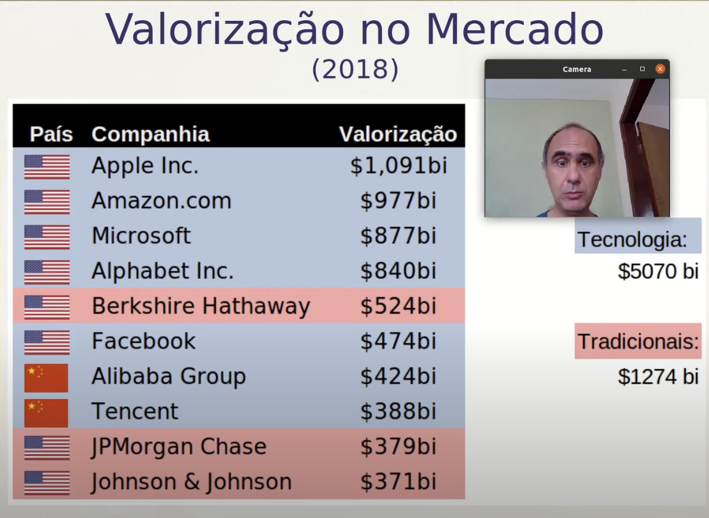

Disciplinas
-
BANCO DE DADOS-T01-2024-1 Concluído
Materiais
Vídeo 1 - Big Data e NoSQL - Aula 09/12 - Bancos de Dados 2020.2. sendProfessor ministrante: André Santanchè.
Conteúdo
Bancos de Dados.
Big Data e NoSQL.
O que está mudando?- Dados estão por toda a parte.
- não somente centralizados em um banco.
- produzidos de forma distribuída e interligados.
- Modelagem e semântica ganham importância.
- Web Semântica e ontologias.
- Data deluge e Big Data.
- novas abordagens (NoSQL).
- processamento e armazenamento descentralizados.
- bancos de dados em memória
O valor dos dados.
Impacto no Modelo Lógico/Físico.
Impacto no Armazenamento/Rede.
 Data Deluge.- Genoma Humano.
- 3.3 bilhões base-pairs.
- Facebook.
- 30/06/2015 – 1,49 bilhões de usuários ativos.
- http://newsroom.fb.com/company-inf 0/.
- Poder de processamento dobra a cada dois anos
- Como crescem os dados?
- É impossível para um armazenamento de dados distribuído fornecer simultaneamente mais de duas das três garantias a seguir (Eric Brewer):
- Consistência: cada leitura recebe a gravação mais recente ou um erro
- Disponibilidade: toda solicitação recebe uma resposta (sem erro) - sem garantia de que contém a gravação mais recente
- Tolerância de partição: O sistema continua a operar apesar de um número arbitrário de mensagens serem descartadas (ou atrasadas) pela rede entre nós
Muitos armazenamentos NoSQL comprometem a consistência (no sentido do teorema CAP) em favor da disponibilidade, tolerância de partição e velocidade.
A maioria dos bancos de dados NoSQL oferece um conceito de "consistência eventual" em que as alterações do banco de dados são propagadas para todos os nós "eventualmente" (normalmente em milissegundos), de modo que as consultas de dados podem não retornar dados atualizados imediatamente ou podem resultar na leitura de dados imprecisos, um problema conhecido como leituras obsoletas
NoSql
- Fornece um mecanismo para armazenamento e recuperação de dados que é modelado em meios diferentes das relações tabulares usadas em bancos de dados relacionais
- Os bancos de dados NoSQL são cada vez mais usados em big data e aplicações web em tempo real
- Motivações: simplicidade de design, escalabilidade "horizontal" mais simples para clusters de máquinas e controle mais preciso sobre a disponibilidade.